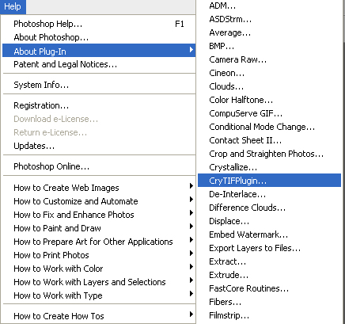
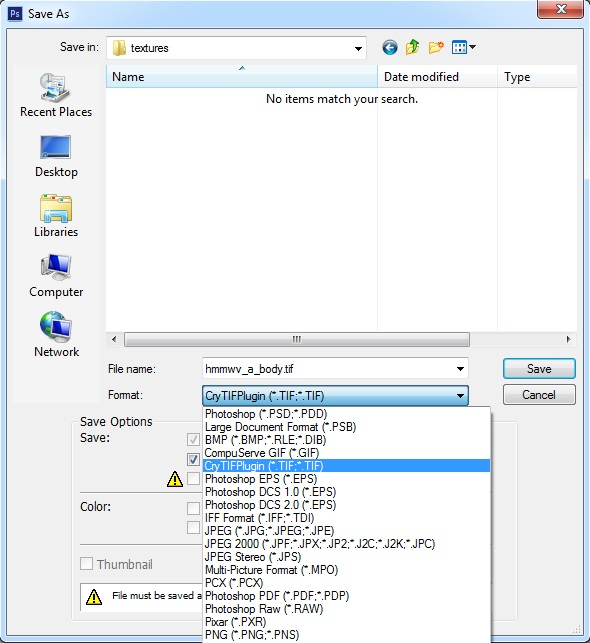
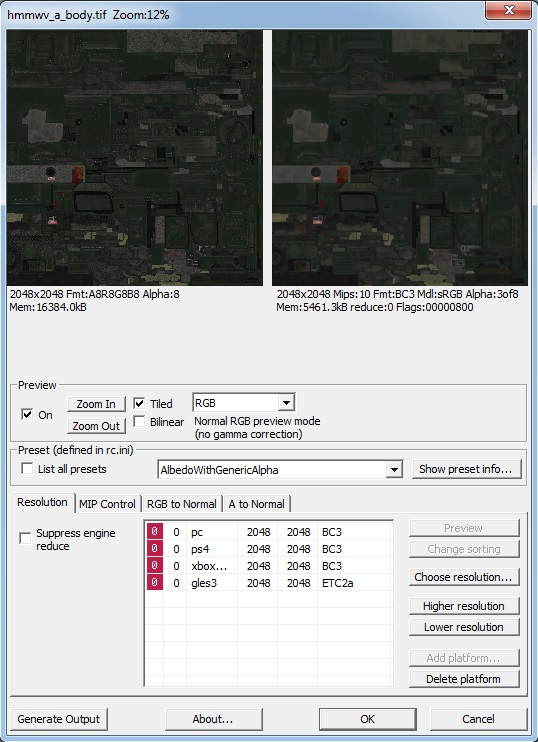

Overview
CryTIF is a Photoshop plugin (CS4 and higher) that can load and save Photoshop images as TIF files. After saving the TIF the plugin invokes the RC which shows a user dialog box where the compression, size and platform specific settings can be selected.
The settings that have been chosen in the dialog box are stored as meta data in the TIF file which is used when the RC creates the *.dds file for in-engine use.
Automatic Install with CryToolsInstaller
We recommend using the CryToolsInstaller to install all DCC tool packages, including CryTif. If you need to manually install the CryToolsInstaller, then follow the instructions in the Manual Install section below.
Manual Install
1. Copy the \Tools\photoshop\plugins\CryTIFPlugin*.8bi file to the Photoshop Plug-ins\File Formats folder, then restart Photoshop.
2. Open Photoshop and go to Help -> About Plugin -> CryTIFPlugin to set the path of the resource compiler (<root>\Bin64\rc\rc.exe) in the dialog box that is displayed.

3. Set it to the root directory of the CRYENGINE installation. Make sure that you use the complete path, in this case: D:\CRYENGINE.
Click the Use SettingsMgr.exe location button to point it towards its default location within the build directory.

4. After a successful installation, CryTIFPlugin (*.tif) should be available as a file format in the Photoshop File dialog:

5. Once installed and the CryTIF exporter is selected you will be shown a screen like the one below to allow for some fine-tuning:
